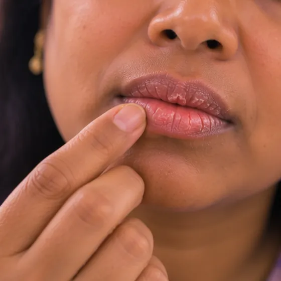

唇炎
嘴唇发炎，使唇部干燥、发红、皲裂或肿胀
这是什么
嘴唇受到刺激而发炎，感觉干燥、疼痛或紧绷，看起来发红或肿胀，还可能裂开或脱皮；嘴角也常受影响。
- 嘴唇和嘴角
- 任何年龄都可能出现
- 嘴唇干痛、皲裂
- 就诊科室
- 家庭医生、牙医或皮肤科医生
- 多发人群
- 任何人；天气干燥、爱舔嘴唇或日晒强烈时更常见
- 传染性
- 不传染
- 病程
- 找到并避开原因后常会好转，但可能复发
常见表现

皮肤干燥脱屑皮肤干燥 
嘴唇干裂唇炎 
嘴唇长疮唇部病损 
皮肤瘙痒瘙痒
其他症状
- 发红、肿胀，或有灼热、疼痛感
为什么会这样

日晒过多紫外线暴露
其他原因
- 天气干燥、风吹，或有舔、咬、撕嘴唇的习惯
- 唇膏、润唇膏、牙膏或某些食物引起的过敏或刺激
- 酵母菌或细菌感染，常见于嘴角的裂口
- 口水积在嘴角、假牙松动，或缺乏某些营养素
出现这些情况请先看医生
- 嘴唇、舌头或面部突然肿胀，并出现呼吸或吞咽困难：拨打999
- 嘴唇和口腔出现疼痛的溃烂，并伴有皮疹扩散或眼睛红痛，常发生在用了新药之后：立即去医院
- 嘴唇上的溃疡、肿块，或白色、红色斑块，几周内仍不消退
- 嘴唇容易出血，或反复出现又硬又厚的结痂
- 嘴唇疼痛的同时出现黄色结痂、脓液、红肿扩散或发烧
- 经过简单护理，嘴唇仍数周裂痛，或反复出现
如果有以上情况，请先看医生，再来做调理。
本页只是一般性的健康资讯。请继续按时服用平常的药物，并继续看医生。
请继续日常治疗
请继续按医嘱服药，并按时复诊。我们的调理是温和的辅助，不能代替医疗。
日常护理

不要挤或抠不要挤压 
注意防晒防晒 
不共用毛巾、剃刀或杯子个人用品分开
更多自我照顾的方法
- 用无香料的普通润唇膏保持嘴唇湿润
- 戴假牙的人要保持假牙清洁，假牙松动时请牙医检查
告诉理疗师
- 皮肤破损、发红或疼痛
- 严重过敏
- 发烧或正在感染
调理师会在开始前和你确认这一项。
常见问题
唇炎是什么？
嘴唇发炎，使唇部干燥、发红、皲裂或肿胀。嘴唇受到刺激而发炎，感觉干燥、疼痛或紧绷，看起来发红或肿胀，还可能裂开或脱皮；嘴角也常受影响。
唇炎有哪些常见表现？
皮肤干燥脱屑；嘴唇干裂；嘴唇长疮；皮肤瘙痒
为什么会有唇炎？
日晒过多
有唇炎要怎么照顾自己？
不要挤或抠；注意防晒；不共用毛巾、剃刀或杯子
AI Body Master 的调理对唇炎有帮助吗？
调理是温和的无针经络养生辅助，不能治疗或治愈唇炎，也不能代替药物或医生。开始前请告诉理疗师。
相关疾病
参考资料: General information based on public health sources such as Mayo Clinic, NHS, Cleveland Clinic and NCBI StatPearls.
页面更新: 2026-11-01